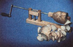
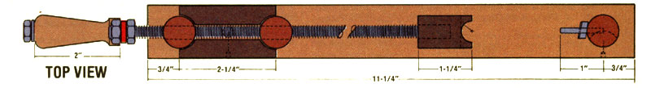

Yes, there's more than one way to skin a spud, if you . . .
After reading Cathy Johnson's article on making potato chips a few issues back (see MOTHER NO. 67, page 87), I thought some of MOM's readers might be interested in a gadget I designed for cutting spuds into spiral slices. As anyone who's made potato chips knows, the secret of success is getting the meat of the vegetable evenly thin, so that it'll fry quickly (before it absorbs too much oil) but still hold together.
My handcranked gizmo is, admittedly, a bit complicated, but it's fun to use and works great. To make your own spiral chipper, you'll need a block of hardwood (I used birch) measuring 3/4" X 1-1/4" X 15-3/4", a 3/4" birch dowel that's 10-1/2" in length, a 5/16" I.D. X 3/8" O.D. X 2-t/4" compression spring, a 12-114"-long piece of 5/16-18 threaded rod, a 1/4" X 2-7/16" hardwood dowel, a 7/16" X 2-5/8" scrap of (preferably) stainless steel that's 1/32" thick, a 1/8" X 1" steel dowel pin, a piece of flat metal measuring 1/8" X 1/2" X 3", a 2"long wooden crank handle, a 1/4" X 2-1/2" coarse-threaded machine bolt with a nut and flat washer, a 5/16-18 hex nut, a No. 6 X 1/2" roundhead wood screw, and some assorted brads.
First, cut your block into three sections ... one 11-1/4", the second 3", and the third 1-1/2" long. Then trim a 1-1/2" piece from the threaded rod, and divide the 3/4" dowel into three equal parts.
Next, drill three 3/4" holes through the 11-1/4" block (which will be the contraption's base) at the points shown in the illustration, and bore a 1/4" opening halfway between the two 3/4" cavities that are closest together. Finish up the base by center-boring a 7/16" hole, 3/8" deep, directly over the just-drilled quarter-incher.
Then take your 3"-long block and bore holes at each end-centered and 2-1/4 inches apart-using the 3/4" bit. With that done, chisel a 5/16"-square channel longitudinally down the center of the same piece of wood ... drill a 15/64" hole through the billet at the midpoint of this groove . . . and remove 3/8"-from each end of the chunk, cutting right across the holes and reducing its overall length to 2-1/4 ".
Trim the third piece of hardwood to 3/4" X 3/4" X 1-1/2", then cross-drill two 1/2" openings through the block, each centered and at a point 1-1/4 inches from one end. Then center-bore a 1/4" hole about 3/4" deep into the flat end of the pierced rectangle, thread it with a 5/16-18 tap, and lop off the cross-bored tip 1/4 inch from the end to create the four wooden "fingers" indicated in the drawings.
With that task complete, carve a cres centshaped depression-3/8" deep and approximately 2-1/8" in length-in one of the 3/4" dowels, making its midpoint about 1-3/8 inches from one end of the post. Then drill two 7/64" holes, parallel to the concave face of the indentation, at points 3/8 inch and 2-1/4 inches from the dowel's short end. You can also take this opportunity to bore a 21/64" hole 3/8 inch from one end of each of the remaining two posts.
Now, grind the 1-1/2" section of threaded rod flat on one side and file the opposite side, just at its ends, enough to form 1/4"-square platforms at the tips. . . which you can then pierce with 5/64" holes prior to mounting the piece-threaded side up-in your previously channeled block, using small brass brads. Once this step is completed, glue the 1/4" dowel into the hole in the smooth side of the block, lock it in place with another brad, and sand the opposite end of the thin peg lightly so that it can slide in and out of the small opening in the base without binding.
The cutter's stainless steel blade can be fabricated by trimming a centered 5/32" X 1/2" slot in one end and drilling a 5/32" hole-also centered-3/8 inch from its opposite (lower) end. Hold the strip at the bottom and twist its righthand edge toward you about 5°. Then sharpen the back side of that edge above the bend . . . screw the blade to the carved post with the bevel facing the wood, as shown ... and drive your 1/8" steel pin into the dowel, through the slot above the mounting screw.
Next, glue all three posts in position (making sure the top holes and pin are in line) and secure them from the side with brads. Once that's done, all that's left is to work up the handle and crank mechanism . . . which is simply a matter of threading the flat bar (1/4-20 at one end and 5/16-18 at the other), rounding its sharp edges, centerboring the wooden crank handle so it will accept the 1/4" bolt, and locking the parts together with the hex nuts.
Finally, assemble the whole gadget by slipping the spring over the 1/4" dowel, placing the entire half-nut/carrier unit between the two closest pegs and into the hole in the base, and-while pushing down on the sprung component-sliding the long threaded rod through the guideposts and twisting it into the "fingered" block. At this point, you can, for the sake of cleaning convenience, coat all the tool's wooden parts with polyurethane.
To use the slicer, merely clamp it to the corner of a table and-pushing down on the spring-loaded carrier-pull the screw assembly out far enough to accommodate the length of your to-be-cut potato. Next, push the spud onto the steel pin, slide the fingered block against its opposite end, and start cranking. The threaded rod will feed the tuber at just the right rate to create spirals of perfectly even thickness . . . thus beating the "by guess and by golly" handslicing method all hollow.
You will probably find, as I did, that cranking out spuds and deep-frying them-skin and all-will turn out tasty family treats . . . and you won't be disappointed at what your gadget can do (perhaps with the help of a stronger spring) with carrots and turnips come saladmaking time!
|
 |
 |
|